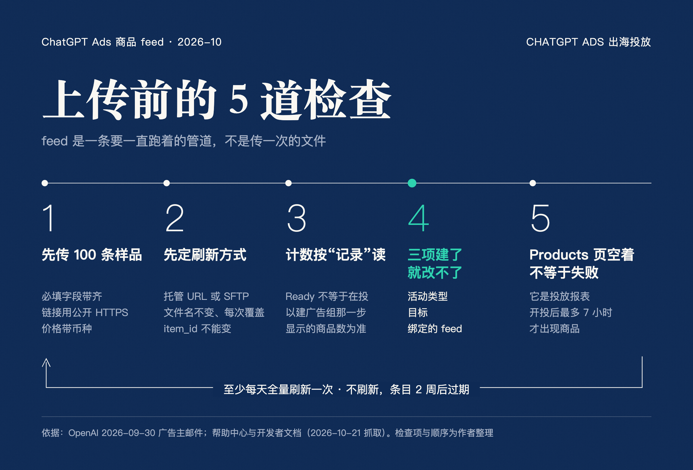

三句话版
ChatGPT Ads 的商品 feed 是一条要一直跑着的管道，不是传一次就完事的文件。大部分功夫花在第一条广告出来之前。
上周第三篇讲了每周表现邮件。这周写给手上有商品目录的零售团队：9 月 30 日前后，OpenAI 给广告主发了一封更新邮件，其中两项和商品 feed 有关，一是批量创建 feed 活动，二是商品审核状态。本文只用这封邮件，以及 10 月 21 日抓取的帮助中心和开发者文档原文，不用我们自有投放的数字。
已在投的，看完知道让商品目录来写广告时有什么不一样；准备投的，知道先做哪件、后做哪件。
邮件里有五项，其中两项和商品 feed 有关：
另外三项：通过 API 报告活动目标之外的转化；账户名、品牌名、法律主体名分开管理；在印尼、马来西亚、菲律宾、新加坡、泰国、越南及中国台湾地区开投。
帮助中心的商品 feed 页交代了背景：这类活动是给"商品目录宽、或者变动频繁"的零售广告主设计的。官方说 feed 生成的广告"have been among the strongest-performing ads in our program to date"，但没公布数字。
广告是用你的数据拼出来的：商品图、标题、星级、价格、促销价、品牌。广告模板目前只能选用哪个图片字段。feed 里的标题和描述，就是你的广告文案。
官方文档里有三条事实：
OpenAI 给的是七步建活动流程。下面五道检查是我按帮助中心和开发者文档整理的，是第一次上传前我会逐项确认的地方。

1. 先传 100 条样品。 官方规范原话："Start with a small sample (around 100 items)"，每一行样品都要带齐必填字段；第一份全量快照要先做质检，再转自动化。规范列的常见失败是三种：缺必填字段、字段名过时或不合规范、字段值格式不对。商品页和图片必须是公开的 HTTPS 链接；CSV 里的价格要带币种，比如"79.99 USD"。
2. 先定刷新方式，再定传什么。 后台提供三种导入：CSV 或 TXT 上传、托管 URL、SFTP。因为条目会过期，帮助中心推荐托管 URL 或自动 SFTP。文件名保持不变、每次覆盖；系统按 item_id 匹配商品，所以商品 ID 不能每次变。
3. 计数是"记录"，不是"商品"。 Feed Connection 的提示框里有 Ingested、Processed、Not approved、Ready 四个数。官方说这些数"describe offer records rather than unique products"，两两相减"may not give an accurate missing-product total"。Not approved 只是总数，没有明细、没有原因；审核通过也不等于能投。建活动时真正该看的，是建广告组那一步显示的商品数：传上去、能投、又通过你筛选条件的有多少。走 API 的话，上传记录会按字段给诊断，比如哪个字段的价格值不合法、影响了几行。
4. 建活动前，定好三项改不了的设置。 开发者文档原话："The campaign's mode, objective, and linked feed cannot be changed after creation." 活动类型、目标、绑定哪个 feed，先想好再点创建。旁边还有三条限制：
5. Products 页空着，不等于上传失败。 帮助中心说 Products 页是"a reporting view"（报表视图），商品有了投放数据才会出现；开始投放后，第一批商品最多要等 7 小时才显示。9 月 30 日的邮件说这个页面现在也显示审核状态，而 10 月 21 日抓取的帮助中心页仍只说它是投放报表。两边说法对上之前，先看广告组里的商品数。活动已经投出去、商品还是没出现，再找客服，带上广告账户 ID、feed ID、活动和广告组名、日期范围和时区、几个商品 ID 样例和 Products 页截图。
传了 feed，商品不会进 ChatGPT 的回答。 测试期内 feed 商品只用于广告。官方说以后可能开放自然展示，没给时间。
Ready 不等于在投。 官方文档换着说法讲了两遍：审核通过不代表能投，符合筛选条件也不代表一定有曝光。预算、出价、审核和库存都还在起作用。
"表现最好之一"是官方说法，不是行业基准。 官方没公布背后的数字。feed 活动好不好，用你自己的转化数据判断，按前两篇讲的方式量。这条是我的判断，不是官方说法。
已在投的，这周开始：
准备投的： 先确认投广告、付款的法律主体所在国家在自助开户名单里。然后清理商品目录：标题和描述会变成广告文案，价格和库存必须是当下的。
观望的： 现在不用动。如果你已经在给别的广告平台供商品 feed，注意 OpenAI 的商品文件规范有自己的字段名，比如 item_id、image_url、is_ads_eligible，传样品前先做一遍字段映射。
从一个品类导出 100 个商品，对着 OpenAI 的商品文件规范核三样：商品页和图片是公开 HTTPS 链接、价格带币种、商品 ID 以后不会变。
留个问题：你的商品目录里，哪个字段最需要先清理才能当广告文案用，标题、描述还是图片？评论区报一下你的品类，我下一篇对比不同品类卡在哪。
Ads Manager 里的一种活动类型，用上传的商品目录生成广告。广告展示商品图、标题、星级、价格、促销价和品牌。官方说它是给商品目录宽或变动频繁的零售广告主设计的。
不会。测试期内 feed 商品只用于广告。官方说以后可能开放。
至少每天一次，每次传全量快照。feed 里的条目两周后过期，所以官方推荐用托管 URL 或自动 SFTP，而不是手动传 CSV。
它是报表视图，商品有了投放数据才会出现，开始投放后最多要等 7 小时。想知道有多少商品能投，看建广告组那一步显示的商品数。
不能。活动类型、目标和绑定的 feed 建好后都不能改。新 feed 活动的地域定向只能到国家一级。
后台 Campaigns → Bulk uploads，选 Bulk sheet，下载 Product feed 模板，广告模板会自动生成。
Stan Lu · ChatGPT Ads 出海投放。写 ChatGPT 广告官方更新的中文解读，只用官方原文、报道、推断三栏出处。
栏目：ChatGPT Ads 更新解读 · 上一篇：ChatGPT 广告节日分享：建活动第一步改成填网址 · English
发布 2026-11-05 · 最后更新：2026-11-05